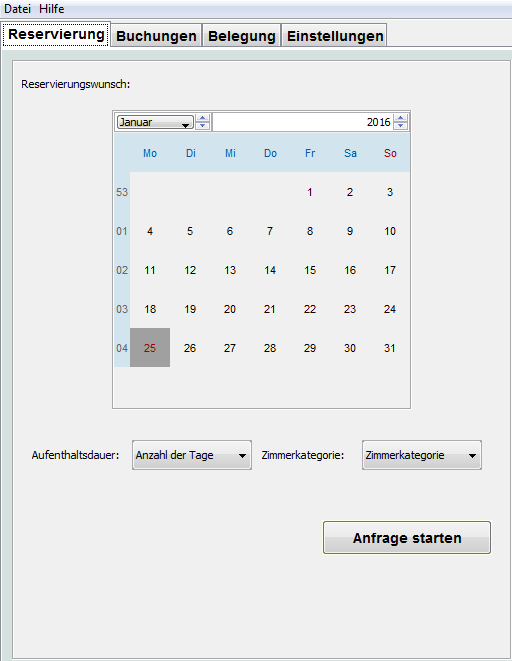
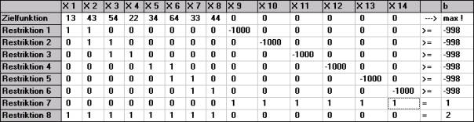

In einem Hotel mit verschiedenen Zimmerkategorien soll gewährleistet werden, dass zu jeder Zeit möglichst viele Buchungen angenommen werden können und der erzielte Deckungsbeitrag des Hotels maximiert wird. Dieser hängt von der Auslastung der Zimmer, der Anzahl der erwarteten kurzfristigen Buchungen und von den gewährten Preisnachlässen ab. Das Programm schlägt immer die nächste optimale Buchungsalternative vor und zeigt diese grafisch an:
Die wesentlichste Änderung im LP-Ansatz ist natürlich, dass es sich nun nicht mehr um eine Minimierung der Zimmer handelt, sondern um eine Maximierung des potentiellen Deckungsbeitrages.

Hier ist ein beispielhaftes LP-Modell zu sehen, wie es vom Hotelmanager erstellt und vom Batch-Solver gelöst wird. Hier sollen zwei Zimmerkategorien mit einem Buchungswunsch von 2 Tagen und einem Betrachtungszeitraum von je 4 Tagen (normalerweise 6 Tage) dargestellt sein.
Die Variablen X1-X4 stehen dabei für die Tage 1-4 des Betrachtungszeitraums und einer Buchung in Kategorie 1. X5-X8 stellen ebenfalls diese Tage für Kategorie 2 dar. Zwischen X4 und X5 sieht man einen „Knick“ in den diagonal verlaufenden Einserkolonnen, da dort der Kategorienwechsel stattfindet.
Pro Kategorie gibt es drei Buchungsmöglichkeiten, insgesamt also sechs. Da nur eine davon gewählt werden kann, sind sechs Schaltervariablen notwendig. Diese werden durch X9-X14 dargestellt.
Restriktion 7 schließt die Auswahl mehrerer Schaltervariablen aus, Restriktion 8 sollte eigentlich nicht notwendig sein, da sie in den anderen Restriktionen bereits implizit enthalten ist. Jedoch tauchten bei größeren Modellen ohne diese Restriktion bei LP-Solve Berechnungsfehler auf, die nicht ganz nachvollziehbar waren. Mit dieser Restriktion funktionierte alles tadellos!
In der Zielfunktion werden die errechneten potentiellen Deckungsbeiträge eingetragen und die Funktion wird maximiert! Im Programm werden die errechneten Deckungsbeiträge mit dem Faktor 100 multipliziert und dann der ganzzahlige Anteil eingetragen, somit wird der Deckungsbeitrag auf zwei Stellen hinter dem Komma berücksichtigt. An dem Ergebnis der Maximierung ändert dies nichts, jedoch ist der absolut erzielte Deckungsbeitrag um den Faktor 100 höher als tatsächlich!
Die Variablen X1-X14 sind alle binär (ganzzahlig, >= 0 und <= 1).
Auf dem Reiter "LP-Solve: Restriktionen und LP-Solve: LP Lösung besteht nun die Möglichkeit, sich über zwei verschiedene Reiter die Restriktionen und sich das LP-Solve Ergebnis anzeigen zu lassen.
© 2013 Fachhochschule Konstanz